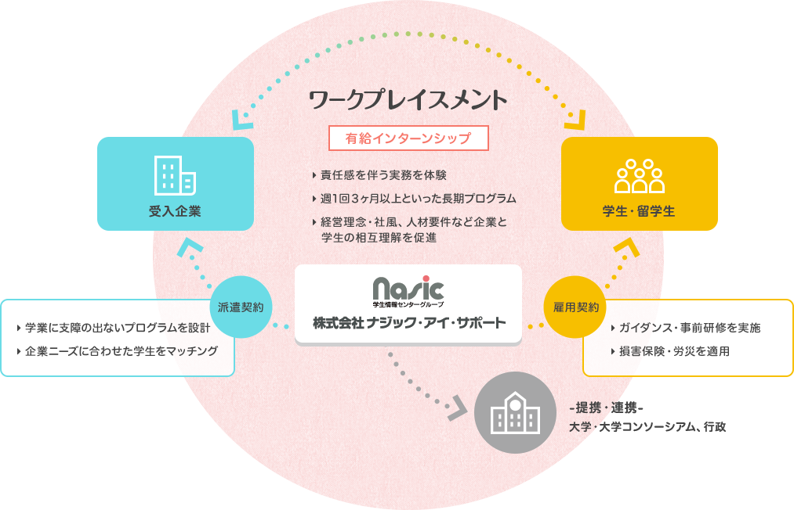
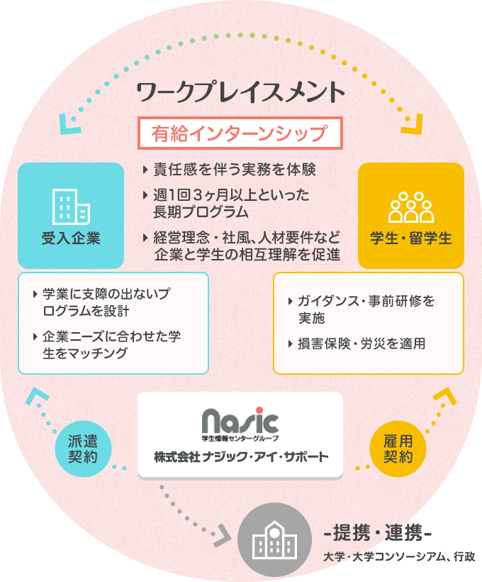

企業担当者様へ ABOUT
ワークプレイスメント WORK PLACEMENT
ワークプレイスメントは、学生が責任感を伴う実務を体験できる中長期型の有給インターンシップです。
学生は実務を体験することで業界や仕事の魅力を発見し、企業と学生との相互理解が促進されます。
学生にとってはインターンシップが働く目的を考え自己成長する契機となり、参加企業への理解が深まることで就業希望が促進されます。また、受入企業においては若手人材の育成効果が認められており、企業と学生の双方にとって有益な取り組みとされています。
インターンシップの実施に当たっては安全や災害補償の確保をしており、就職協定や労働関連法令も順守する体制を整えていますので、安心して取り組んでいただくことが可能です。


従来型インターンシップの場合
教育的要素が強く、体験や見学的なプログラムがほとんどで、労働関連法令が適用されるので責任を伴う実務体験は困難
アルバイトの場合
誰でもできる単純労働が多く、仕事や企業の魅力理解につながりにくい